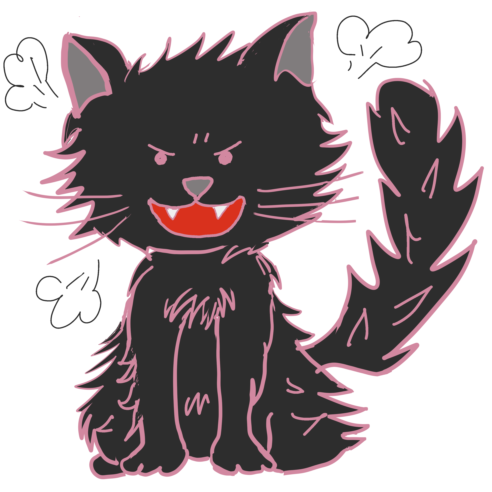
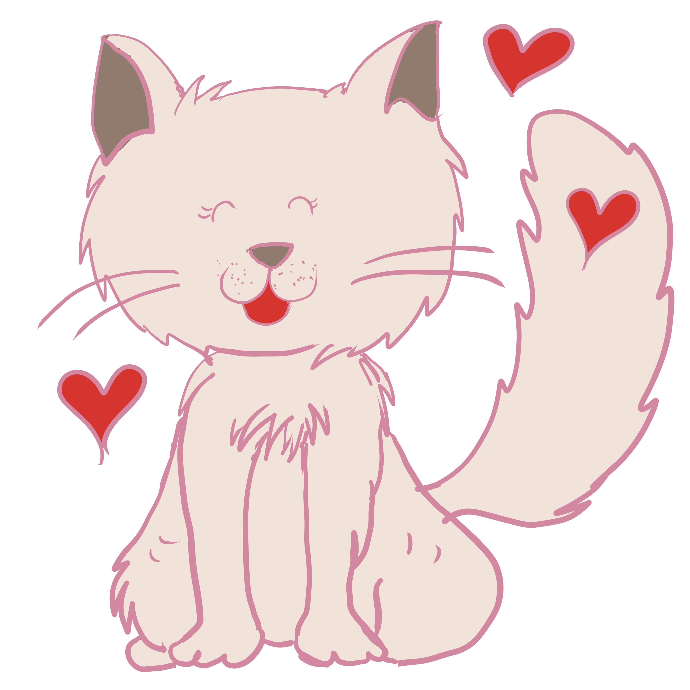

{% extends 'base.html' %} {% block content %}
{{user_name}}さんこんにちは
id
やること
いつまで？
あとどれぐらい?
{% for item in html_hearinglist %}
{{item["id"]}}
{{item["task"]}}
{{item["time"]}}
{{item["left_time"]}}
できた？
できなかった？
{% endfor %}
戻る


{% endblock %}